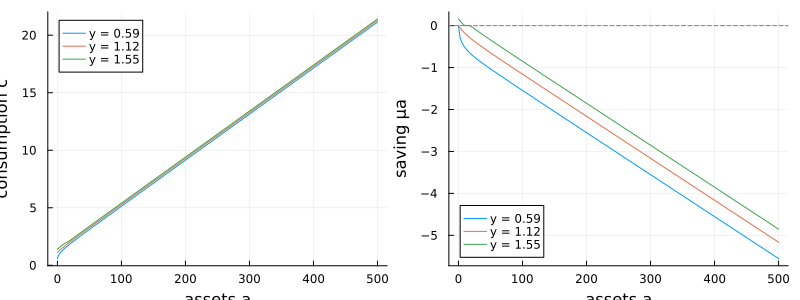

Achdou–Han–Lasry–Lions–Moll: consumption and saving
This is the diffusive-income version of the Achdou–Han–Lasry–Lions–Moll (2022) consumption– saving problem, the workhorse building block of continuous-time heterogeneous-agent (HACT) models. A household earns stochastic labor income $y$, saves in a single riskless asset $a$ at rate $r$, and cannot borrow past a limit $a \ge a_{\min}$. Income mean-reverts as a diffusion, and the value function $v(y, a)$ solves the Hamilton–Jacobi–Bellman equation
\[\rho\, v = \max_{c}\; \frac{c^{1-\gamma}}{1-\gamma} + \partial_a v\,\bigl(y + r a - c\bigr) + \partial_y v\,\kappa_y(\bar y - y) + \tfrac12 \sigma_y^2\, \partial_{yy} v,\]
with first-order condition $c = (\partial_a v)^{-1/\gamma}$ and the borrowing constraint $a \ge a_{\min}$ enforced as a state constraint (saving cannot be negative at the limit).
The model
using EconPDEs, Distributions, Plots
struct AchdouHanLasryLionsMollModel_Diffusion
# income process parameters
κy::Float64
ybar::Float64
σy::Float64
r::Float64
# utility parameters
ρ::Float64
γ::Float64
amin::Float64
amax::Float64
end
function AchdouHanLasryLionsMollModel_Diffusion(;κy = 0.1, ybar = 1.0, σy = 0.07, r = 0.03, ρ = 0.05, γ = 2.0, amin = 0.0, amax = 500.0)
AchdouHanLasryLionsMollModel_Diffusion(κy, ybar, σy, r, ρ, γ, amin, amax)
endMain.AchdouHanLasryLionsMollModel_DiffusionIncome drift is exogenous, so its derivative is upwinded on the sign of $\mu_y$. The asset drift $\mu_a = y + r a - c$ is endogenous: we try the forward derivative, fall back to the backward one, and — when both fail or the borrowing constraint binds — set $\mu_a = 0$ and consume out of income and interest. We save the resulting saving rate $\mu_a$ on the grid.
function (m::AchdouHanLasryLionsMollModel_Diffusion)(state::NamedTuple, u::NamedTuple)
(; κy, σy, ybar, r, ρ, γ, amin, amax) = m
(; y, a) = state
(; v, vy_up, vy_down, va_up, va_down, vyy, vya, vaa) = u
μy = κy * (ybar - y)
# Newton can try negative marginal values, so cap implied consumption instead of flooring derivatives.
cmax = 100.0 * (y + r * max(a, 0.0))
# upwinding for income direction (easy because exogenous income drift)
vy = (μy >= 0) ? vy_up : vy_down
# upwinding for asset direction (harder because endogeneous asset drift)
c_up = va_up > 0 ? min(va_up^(-1 / γ), cmax) : cmax
μa_up = y + r * a - c_up
if μa_up >= 0.0
va = va_up
c = c_up
μa = μa_up
else
c_down = va_down > 0 ? min(va_down^(-1 / γ), cmax) : cmax
μa_down = y + r * a - c_down
if (μa_down <= 0.0) && (a > amin)
va = va_down
c = c_down
μa = μa_down
else
# If the two candidates straddle zero OR drift is negative at minimum asset threshold
# (i.e. borrowing constraint), then, we must have drift μa = 0.
c = y + r * a
va = c^(-γ)
μa = 0.0
end
end
vt = - (c^(1 - γ) / (1 - γ) + μa * va + μy * vy + 0.5 * vyy * σy^2 - ρ * v)
return (; vt), (; μa, c)
endSolving it
Income lives on a grid spanning the bulk of its ergodic (Gamma) distribution, and assets on a grid from the borrowing limit up to $a_{\max}$. The initial guess is the value of consuming the annuity value of total wealth $a + y/r$ forever.
m = AchdouHanLasryLionsMollModel_Diffusion()
distribution = Gamma(2 * m.κy * m.ybar / m.σy^2, m.σy^2 / (2 * m.κy))
stategrid = (; y = range(quantile(distribution, 0.001), quantile(distribution, 0.999), length = 10),
a = range(m.amin, m.amax, length = 200)
)
yend = (; v = [(m.ρ / m.γ + (1 - 1 / m.γ) * m.r)^(-m.γ) * (a + y / m.r)^(1 - m.γ) / (1 - m.γ) for y in stategrid[:y], a in stategrid[:a]])
result = pdesolve(m, stategrid, yend)Residual_norm: 1.30532561868693e-14
Zero: OrderedDict(:v => [-23.851915699946375 -21.022088750918705 … -1.1853922960612366 -1.179769825569008; -22.985887646573325 -20.473008493755543 … -1.1841304045225616 -1.178519890381647; … ; -18.09615230512278 -16.753353538511572 … -1.1718822545823602 -1.1663871494494589; -17.748756393622156 -16.460600378328298 … -1.1705602754166013 -1.165077559406481])
The solution
We plot policies against assets for three income levels (low, median, high). Consumption is recovered from the budget identity $c = y + r a - \mu_a$.
as = stategrid[:a]
ys = stategrid[:y]
iys = round.(Int, range(1, length(ys), length = 3))
μa = result.optional[:μa]
c = result.optional[:c]
p1 = plot(xlabel = "assets a", ylabel = "consumption c")
for iy in iys
plot!(p1, as, c[iy, :], label = "y = $(round(ys[iy], digits = 2))")
end
p2 = plot(xlabel = "assets a", ylabel = "saving μa")
for iy in iys
plot!(p2, as, μa[iy, :], label = "y = $(round(ys[iy], digits = 2))")
end
hline!(p2, [0.0]; color = :gray, linestyle = :dash, label = "")
plot(p1, p2; layout = (1, 2), size = (800, 300))
Consumption rises with both assets and income (left). Saving (right) tells the story of the borrowing constraint: at the limit $a = a_{\min}$ a low-income household would like to borrow but cannot, so its saving is pinned at zero and it consumes all of its income and interest. Because households are impatient relative to the interest rate ($\rho > r$), saving turns negative at high wealth — every income level has a finite target above which it runs its assets down — which is exactly what keeps the stationary wealth distribution from spreading without bound.
This page was generated using Literate.jl.